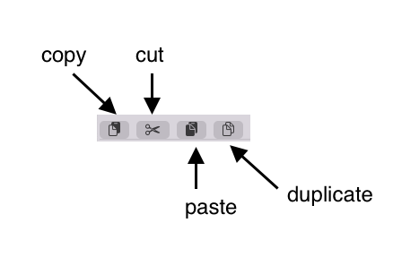

Pasteboard commands
These command buttons are used in almost all list view.

-
copy Copies your current selection to a common application pasteboard. This makes the selected elements available for paste operations on the same or any other parent element. With the paste operation, the selected elements are copied to the new parent and kept for the current parent element.-
-
cut Copies your current selection to a common application pasteboard. This makes the selected elements available for paste operations on the same or any other parent element. With the paste operation, the selected elements are moved to the new parent element.
-
paste the elements to the new parent depending on the previous operation (cut,copy).
-
duplicate copies and pastes the selected elements to the current list.